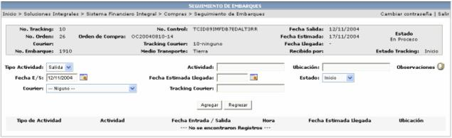

En esta lista se desplegarán las órdenes que tiene Tracking en estado de Inicio o en Proceso.
Aquí el usuario le registrará todos los movimientos que se van presentado con la mercadería incluida en el tracking desde que sale del país origen hasta que se entrega la mercadería a la empresa.

Tipo de Actividad: puede ser salida, llegada o entrega
Actividad: una descripción del tipo de actividad.
Ubicación: lugar donde se encuentra la mercadería en ese momento.
Observaciones: anotaciones que se quieran especificar.